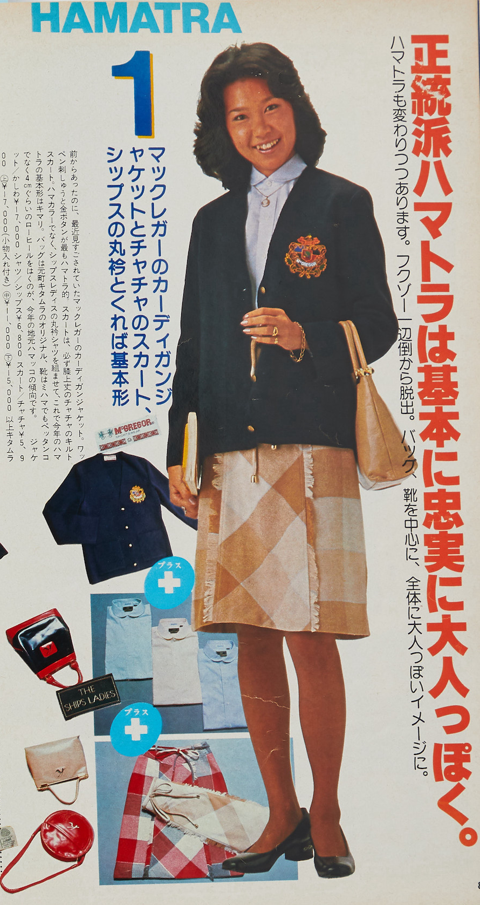
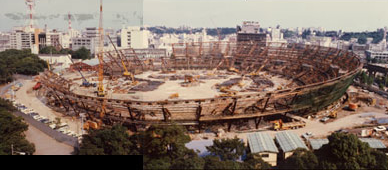
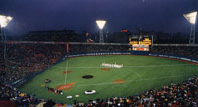
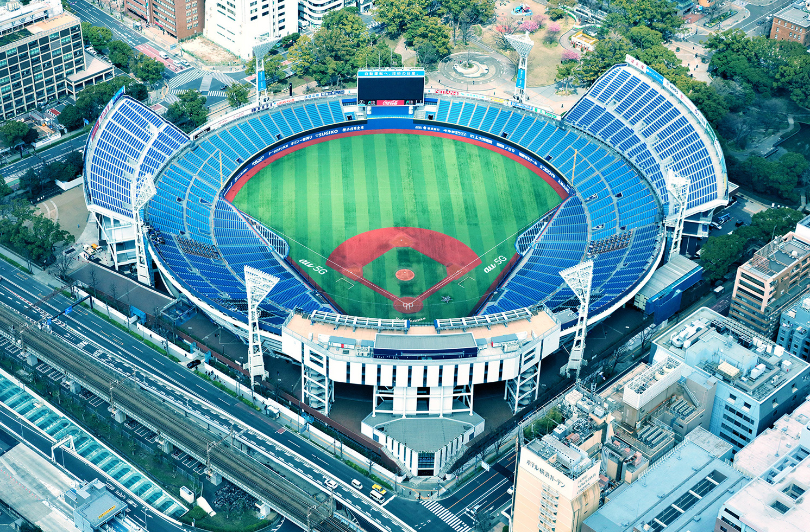
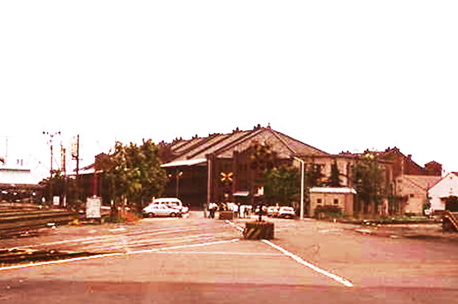
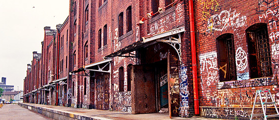
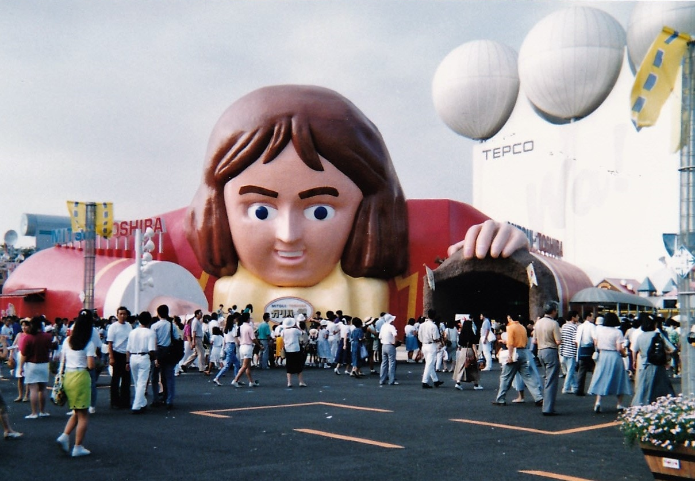
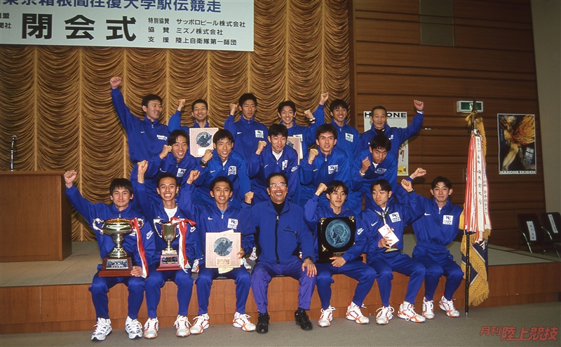

質問内容と記憶装置
質問１ 1970年代には「ハマトラ」という横浜元町発祥のファッションが流行っていたそうですが、実際に着ていましたか？
出典 JJ Official Site
ハマトラ・・・横浜トラディショナルの略。
1979年以降に全国的ブーム、横浜元町発祥
フェリス女学院大学の学生コーデを参考に清楚できちんと感のあるお嬢様ルック
地元生まれ名ブランド「フクゾー」の洋服、「ミハマ」の靴、「キタムラ」のバック
→三大アイテム
ポロシャツ、カーディガン、チェックのスカートにパンプスが定番コーデ
質問２ 当時どのようなファッションをしていましたか？または好きでしたか？
質問３ 1978年に横浜スタジアムがつくられましたが、野球観戦された思い出などはありますか？



質問４ 1987年には、赤レンガ倉庫がライトアップされ、倉庫前広場で初めてコンサートが行われたそうですが、赤レンガ倉庫での思い出はありますか？


出典 横浜赤レンガ倉庫
質問５ 1989年は横浜市政100周年、横浜開港130周年の節目で、横浜博覧会が開催されました。実際に足を運ばれましたか？
質問６ また当時の様子はどのような感じでしたか？

質問７ 1998年に横浜ベイスターズがセ・リーグを制覇し日本一になっていますが、当時応援していた球団はどこですか？
質問８ （もし横浜ベイスターズを応援していて、当時も試合を見ていたなら）当時どのように観戦していましたか？

出典 野球殿堂博物館
質問９ 同年の箱根駅伝では、神奈川大学が総合優勝を果たしていますが、印象的だったシーンはありますか？
